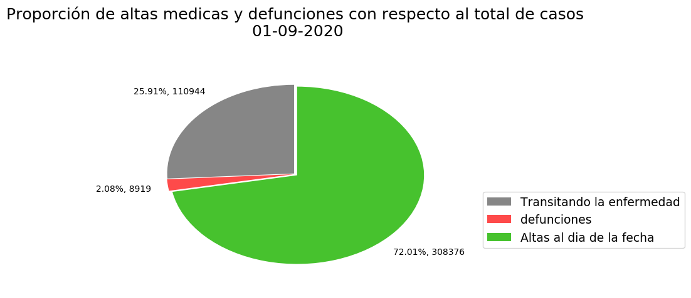

Situacion general Argentina al dia de la fecha
Al dia 01/09/2020 el total de casos confirmados en Argentina es de 428.239
Al momento la cantidad de personas fallecidas es 8.919 y el total de altas es de 308.376 personas

| Provincia | Casos positivos reportados | |
|---|---|---|
| Buenos Aires | 264.950 | |
| CABA | 96.999 | |
| Catamarca | 67 | |
| Chaco | 5.492 | |
| Chubut | 955 | |
| Córdoba | 8.914 | |
| Corrientes | 314 | |
| Entre Ríos | 3.650 | |
| Formosa | 83 | |
| Jujuy | 8.542 | |
| La Pampa | 212 | |
| La Rioja | 1.628 | |
| Mendoza | 7.191 | |
| Misiones | 66 | |
| Neuquén | 3.172 | |
| Río Negro | 6.175 | |
| Salta | 3.503 | |
| San Juan | 223 | |
| San Luis | 156 | |
| Santa Cruz | 1.808 | |
| Santa Fe | 8.582 | |
| Santiago del Estero | 976 | |
| Tierra del Fuego | 2.102 | |
| Tucumán | 2.479 | |
| REFERENCIA OFICIAL | ||